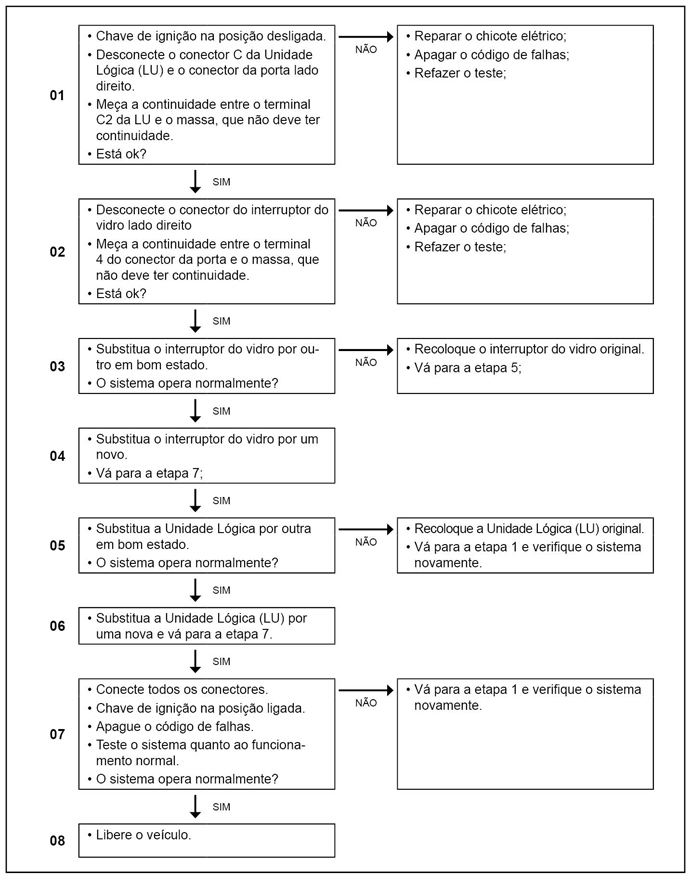

|
 |
|---|
Legenda
Causa Sinal do interruptor do vidro do passageiro da janela direita, em curto-circuito com o potencial negativo.
Efeito Vidro elétrico não funcionará.
Dicas para a Oficina Verificar o chicote da porta, descascada ou em contado com potencial negativo; Interruptor de controle levantamento vidro porta do motorista com defeito verificar conforme tabela abaixo. Valores de resistência do interruptor:
Pinos 1 e 3 do interruptor do vidro lado do passageiro.
Passos do Diagnóstico de Falhas
Leia sempre as Recomendações para Diagnósticos.

|
|||||||||||||||||